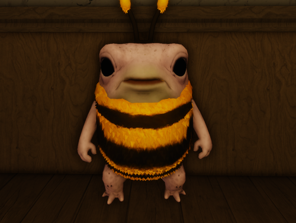
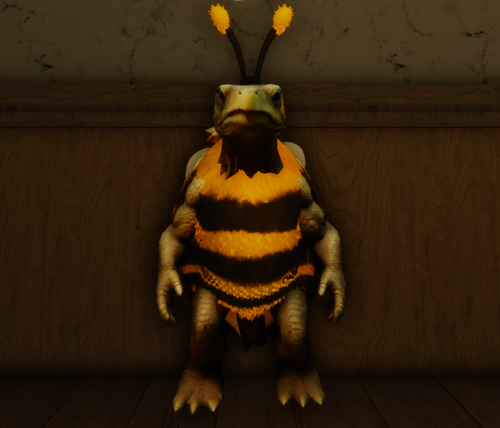

Upon entering this world, Grey was a teensy weensy little tadpole.
Her brain was slightly less-average than the other tadpoles, and because of that, she lost her way in the creek and could not swim back to where her family was. She swam on, following the stream as she grew. In the early stages of her metamorphosis stage, she was taking her first steps along the rocky stream when she instinctively went towards someplace warm.
A larger “creature” came running, leaving from the large shelter, and came across Grey walking slowly. The “creature” grew curious, grabbing Grey, which put Grey into shock and passed out. The “creatures” were humans, and they took care of Grey until she woke up. During Grey’s rest, the humans decided to donate her to someplace else, and with a box as shelter – they left her at the front doors of a Mental Institute at Equalia Falls.
Grey looked around, confused, when she saw something shiny and the same colour as her – pink. Finding comfort in something similar to her, she ate it, and with a full stomach she went back to sleep.

Rae’s life with his family was short-lived in the egg he called home, since in the few days since his egg had been laid, a bird mistook him for their own and grabbed his egg. As the bird flew, it realised the egg was far too large and heavy to be its own, and realising its mistake, it simply let go of the egg. The egg landed in a field, cracked open from the force, and Rae wailed for its mother. He was underdeveloped, yet thankfully he was found by a kind of creature – humans.
The humans knew they had to do something, and decided to take care of the turtle until they could let the turtle return to the water. When Rae returned to where he was supposed to be, instead of swimming to his family, he instead swam the opposite direction – smelling something sweet. That’s when he came across land, and upon walking for a while, he found something large – a mountain, with odd crystals poking out of it. Curious, and with less concern than he should’ve had, Rae ate it easily, chewing through the tough crystalized glow.
He looked around, feeling sleepy, when he found a small box. He walked up to it, laid beside it, and rested his eyes after days of moving.
